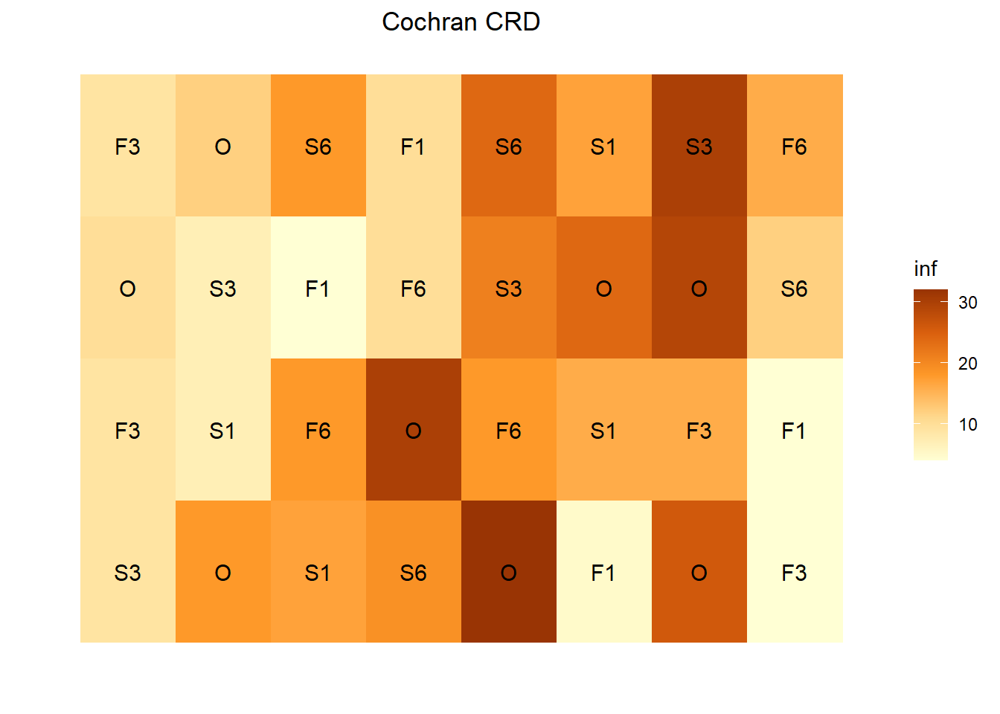

Section 7 Other Models - R
library(agridat); library(desplot)
library(dplyr)
library(nlme); library(spaMM)
library(lme4); library(lmerTest)
library(breedR)
# set some colors for plotting (optional)
autumn <- c("#FFFFD4", "#FED98E", "#FE9929", "#D95F0E", "#993404")
blues <- c("aliceblue", "cornflowerblue", "blue", "Navy")
vir <- hcl.colors(25, palette = "viridis", rev = TRUE)Spatial models can easily be extended to fit other experimental designs such as alpha lattice and split plot, and traits with non-Gaussian distribution that are modeled using a generalized linear model.
Below are minimal examples that omit several steps conducted in 5 (e.g. fitting the empirical variogram) for brevity. Also, although spatial variance is incorporate into each example, we have not made an effort to ensure that each is the best fitting model for the data. The examples are intended to illustrate the correct syntax in R rather than the process of proper model fitting (which was shown in 5).
7.1 Other Experimental and Treatment Designs
7.1.1 Completely randomized design
If you are running a field experiment with a completely randomized design (CRD), you can use the gls() function from the nlme package similar to how lme() was used described in 5 to build a linear model. The gls() function will work with balanced and unbalanced data.
The cochran.crd data set evaluated the effect of sulfur treatments on potato scab infection.
data(cochran.crd)
ggdesplot(cochran.crd, inf~col*row,
text = trt, cex = 1, col.regions = autumn,
main = "Cochran CRD")
m_crd <- gls(inf ~ trt, correlation = corExp(form = ~ row + col),
data = cochran.crd)7.1.2 Multi-way Factorials
Factorial experiments that are evaluating the effects of multiple crossed treatments are an extension of the linear mixed model (if your experimented uses RCBD), or the lienar model in the case of CRD.
The chinloy.fractionalfactorial evaluates the effect of different fertilizer treatments (nitrogen, phosphorus, potassium, bagasse, and filter mud press) and concentrations on sugarcane yield. The levels of {0,1,2} for all variables indicate the relative concentrations of each fertilizer. Only 2-way interactions are being evaluated.
data(chinloy.fractionalfactorial)
m_factor <- lme(yield ~ N + P + K + B + F + N:P + N:K + N:B + N:F,
random = ~ 1|block,
correlation = corMatern(form = ~row + col),
data = chinloy.fractionalfactorial)7.1.3 Alpha lattice
The burgueno.alpha data set uses an incomplete block alpha design with 16 treatment levels, 12 blocks and 3 reps.
data(burgueno.alpha)
ggdesplot(burgueno.alpha, yield ~ col*row, out1 = block, out2 = rep,
text = gen, cex = 1, col.regions = autumn,
main = "Burgueno Alpha Lattice")
# complicated asreml code in example
m_alpha <- lme(yield ~ gen,
random = ~ 1|rep/block,
data = burgueno.alpha)
m_alpha_IBD <- remlf90(fixed = yield ~ gen,
random = ~ block,
spatial = list(model = 'AR',
coord = burgueno.alpha[, c('col','row')]),
data = burgueno.alpha)## Warning in parse_results(file.path(tmpdir, "solutions"), effects, mf,
## reml.out, : The algorithm did not converge
## Warning in parse_results(file.path(tmpdir, "solutions"), effects, mf,
## reml.out, : The algorithm did not converge7.1.4 Latin square
Latin is a special example of a lattice experiment where each treatment occurs in each row and in each column. As a result, the row and column effects are used to model spatial effects.
The *cochran.latin** data set examines the effect of an “operator” (a person) on the difference between the true plot height and operator-measured height (of wheat plots).
data(cochran.latin)
cochran.latin <- transform(cochran.latin, rowf = as.factor(row), colf = as.factor(col))
ggdesplot(cochran.latin, diff ~ col*row,
text = operator, cex = 1, col.regions = vir,
main = "Cochran Latin Square")
m_latin <- lmer(diff ~ operator + (1|colf) + (1|rowf),
data = cochran.latin)7.1.5 Split plot
The durban.splitplot data set looks at the effect of fungicide on barley varieties. The main plot is fungicide (2 levels), and the sub plot is variety (70 levels). There are 4 blocks.
# "bed" refers to the spatial position orthogonal to row (usually called 'column')
data(durban.splitplot)
ggdesplot(durban.splitplot, yield~bed*row, col.regions = vir,
out1 = block, out2 = fung, num = gen,
main = "durban splitplot")
m_sp <- lme(yield ~ fung*gen,
random = ~ 1|block/fung,
correlation = corGaus(form = ~ row + bed),
data = durban.splitplot)7.1.6 Split-split plot
The archbold.apple data set of apple trees is examining the impact of spacing (the main plot), root stock (the split plot) and variety (the split-split plot) on fruit yield. There are 5 blocks.
data(archbold.apple)
archbold.apple <- transform(archbold.apple, rep=factor(rep), spacing=factor(spacing), trt=factor(trt),
mainp = factor(paste(row, spacing, sep="")),
splitp = factor(paste(row, spacing, stock, sep="")))
m_ssp <- lme(yield ~ spacing*stock*gen,
random = ~ 1|rep/mainp/splitp,
correlation = corExp(form = ~ row + pos),
data = archbold.apple, na.action = na.exclude)7.1.6.1 Estimated marginal means
Emmeans can be extracted in the same way as previously described in 5:
library(emmeans)
preds <- emmeans(m_ssp, ~ gen | stock)## NOTE: Results may be misleading due to involvement in interactionspairs(preds)## stock = M0007:
## contrast estimate SE df t.ratio p.value
## Golden - Redspur 22.7 14.3 24 1.589 0.1251
##
## stock = MM106:
## contrast estimate SE df t.ratio p.value
## Golden - Redspur -34.2 14.0 24 -2.434 0.0228
##
## stock = MM111:
## contrast estimate SE df t.ratio p.value
## Golden - Redspur -24.9 12.5 24 -1.985 0.0587
##
## stock = Seedling:
## contrast estimate SE df t.ratio p.value
## Golden - Redspur 33.3 13.9 24 2.398 0.0246
##
## Results are averaged over the levels of: spacing
## Degrees-of-freedom method: containment7.1.7 Split block
also, over-dispersed count data
data(beall.webworms) 7.1.8 Augmented
lind <- read.csv("data/AB19F5_LIND.csv")